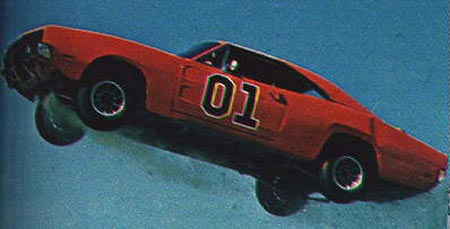

7th May 2005
Start
Christchurch View Point, Christchurch, City of Newport
Registration from 09:30 with last entry 09:55 prompt.
Start time 10:00
Please register with the event marshals.
Be prepared to pay the entry free (£10)
Aim of the event
To travel across the glorious rolling coutryside of East, South, West and Mid Wales ending in the picturesque
seaside town of Aberystwyth.
To ensure that the route is adhered to, the event will be split into 4 stages. There will also be some souvenirs
and answers to clues to collect on the way.
At each checkpoint, each team will need to collect proof of arrival time from a pre-designated outlet. This
could be in the form of a cashpoint or shop receipt or a pay and display ticket.
Requirements
- Good quality road map (pref. 4 miles to an inch)
- 40p in change
Rules
- One vehicle per team with max 4 persons
- No motorcycles, or aeronautical contraptions
- All vehicles to be roadworthy, have valid MOT certificate, Insurance and road fund licence
- All speed limits and other aspects of the highway code are to be adhered to at all times
Disclaimer
The organisers will not accept resposibility for loss or damage incurred; injuries sustained; penalties incurred for breach of laws and/or by-laws; female map readers; or any other incident or event that would result in litigation.
